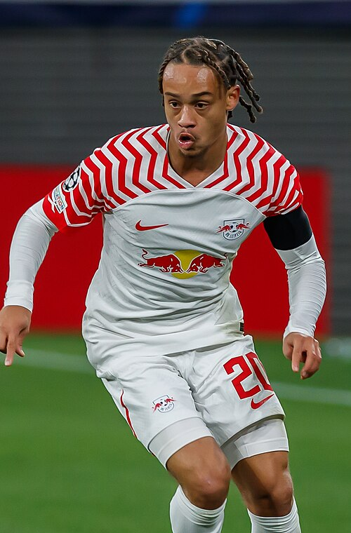

Ezzcoins › Player pages › Xavi Simons
81
CAM

Simons
PAC75
SHO76
PAS79
DRI84
DEF61
PHY66
Photo (cropped): Original: Steffen Prößdorf; Derivative work: SonoGrazy · CC BY-SA 4.0 · Wikimedia Commons
Photo source
https://commons.wikimedia.org/wiki/File:2023-10-04_Fu%C3%9Fball,_M%C3%A4nner,_UEFA_Champions_League,_RB_Leipzig_-_Manchester_City_FC_1DX_2672_(Xavi_Simons).jpg
Licence: https://creativecommons.org/licenses/by-sa/4.0
Xavi Simons
81 CAM · Spurs · Premier League ·  Holland
Holland
No console price yet. Add this player to your watchlist on Ezzcoins: the most-watched players get a price every hour.
81Meta rating · CAM same as overall · LM 79 · ST 79 · LW 78
PAC75
SHO76
PAS79
DRI84
DEF61
PHY66
- Position
- CAM (also LM, LW, ST)
- Club
- Spurs
- League
- Premier League
- Nation
- Holland
- Skill moves
- 4★
- Weak foot
- 3★
- Preferred foot
- Right
Meta rating: Ezzcoins' own estimate of how well this card plays in game, worked out from its stats for each position it can play, its skill moves, weak foot and PlayStyle+. An average card scores about its overall rating; higher means it plays above its rating.
Watch on EzzcoinsMore from Spurs
- 85
 Sandro TonaliCDM
Sandro TonaliCDM - 83
 Pedro PorroRB
Pedro PorroRB - 82
 James MaddisonCM
James MaddisonCM - 82
 Marcos SenesiCB
Marcos SenesiCB - 81
 Dejan KulusevskiCM
Dejan KulusevskiCM - 81Jan Paul van HeckeCB
- 81Micky van de VenCB
- 81
 Mohammed KudusRM
Mohammed KudusRM